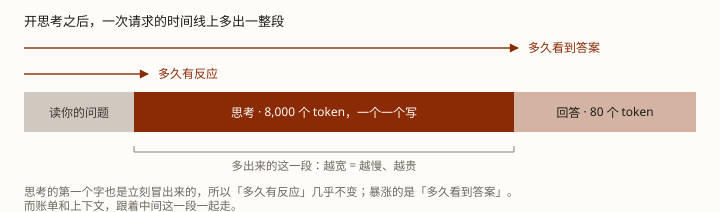

同一个问题，3 秒答一个、30 秒答一个，后者还更对。这多出来的 27 秒是什么？以及它凭什么更对。
你大概遇到过这种事：同一个问题丢给不同的模型，有的秒回，有的要先沉默十几秒、屏幕上滚出一大段「思考」，然后给出一个明显更稳的答案。
这段沉默和那段文字到底是什么？先拆掉两个最常见的误会：
学完这课，你能解释那种「慢」是从哪来的、判断一个任务值不值得开思考、以及知道自己为思考付了哪几笔钱（还有你的循环代码要改哪一行）。
多出来的那一步，本质就是「多花 token、多花时间」。它换来准确率，代价是四笔账一起算：更慢、更贵、更占上下文、还要改你的循环代码。
所以它是一个工程决策（要不要开、给多大预算），不是一个能力开关。后面每一节都挂回它。
这件事看着像抠字眼，但它不是。中文里「推理」两个字同时指两件不同的事，而本课程前面几课已经在用其中一个意思了：
| 中文「推理」 | 英文 | 指什么 |
|---|---|---|
| 「推理引擎」 | inference | 跑模型这件事本身。vLLM、SGLang、各家 API 服务端都叫这个名字 |
| 「推理模型」 | reasoning | 想事情——也就是本课要讲的「会思考的模型」 |
本课程的口径：讲「跑模型」时用「跑」字（跑模型、跑一轮）；讲「想事情」时用「思考」字（思考内容、会思考的模型）。所以术语表里「推理引擎」和「思考」是两条，不是一条。
为什么现在要钉它？因为第 3 课进阶里已经埋了一句「用推理模型时，上一轮的思考内容不原样带回去，缓存就断了」——那个坑就长在这个二义性上：你以为在讲「跑模型的引擎」，其实在讲「会思考的那种模型」。这一课就是把它讲完。
官方文档有一句话把整件事说透了，那是一次答完的模型面对的处境：
原文大意是：一次答完的模型，没有草稿、没有检查、没有中途改道的机会——答错了就是答错了。
而思考打开之后，它会：用自己的话把问题复述一遍、试几种办法、检查中间结果、发现某条路站不住就放弃它。
这几件事，正是人写东西时真会做的动作：先打个草稿，发现算错了回头改。所以你会觉得「这像人思考」——这个感觉不算错，但下面三条必须一起知道，不然容易得出错的结论。
所以诚实的说法是：它没有学会「像人一样思考」。它学会了两条让答案更对的路——一条是从前文抄套路，一条是多花 token 试出来。
先回答一个很具体的疑问：请求里只告诉了模型「允许思考、预算多少」，那客户端凭什么知道屏幕上那段思考从哪开始、到哪结束？
答案在响应里，不在请求里。模型的一次回答不是一整段文字，而是一串带类型的内容块（content block）按顺序排好——思考是一类块，答案是另一类块。
"content": [
{ "type": "thinking", "thinking": "...", "signature": "WaUjzkyp..." },
{ "type": "text", "text": "..." }
]块的类型就是这个信号：出现一个 thinking 块＝思考开始；这个块结束＝思考结束，之后才是答案。流式传输时这条边界由一串事件逐条标出来，下面是真实的事件序列：
content_block_start index=0 type = thinking ← 思考开始
content_block_delta delta = thinking_delta ×N ← 思考内容
content_block_delta delta = signature_delta ← 签名落定
content_block_stop index=0 ← 思考结束
content_block_start index=1 type = text ← 答案开始
content_block_delta delta = text_delta ×N（那两个 content_block_start / content_block_stop 就是「切」这个动作本身，而它跟Agent 第 2 课的工具调用是同一招：模型不声明「我在思考」，服务端也不判断哪段是思考——两边都只认形状。那个「记号」长什么样是我从规则反推的，厂商没公开内部实现。）
thinking 块都没有——那这一次就是没想。客户端判断「有没有想」，只能靠有没有这个块，请求参数里读不出来。所以后面讲四笔账那一节里说的思考块，就是上面这个块——你的程序要存的不是那段文字，是整个块。
这一节只讲机制，不碰强化学习那一套体系（那是另一门课）。你需要知道的只有一件事：以前要人做一件很贵的事，现在不用了。
而真正让它变准的，是这个过程里自己长出来的三类动作——你界面上看到的那些「等一下我再想想」「不对，重来」「换个办法」，就是它们：
自我检查 · 自我验证 · 动态换策略。R1 论文列的就是这三个词。
既然「只给结果打分」这么省事，为什么还有人去标每一步对不对？因为这两件事不一样：那篇对照实验的结论是——在数学题上，逐步打分明显优于只看最终结果，过程监督的模型能解出测试子集的 78%。
但代价是又回到「要人标注」。所以工业界选了另一条更省钱的路。两条路都真实存在，别把它们混成一条。
现在算账。关键前提只有一句：那段思考是真的 token，走的还是同一条流水线、还是逐个往外吐。所以它进的是和答案一模一样的账本。

「开了思考会不会让首字延迟变差」这个问题，没有单一答案，取决于你的客户端怎么显示：
（第 2 课把延迟分成 TTFT 和「每 token 耗时」两个指标，就是为这件事准备的——回看第 2 课第 5 节。）
官方文档的原话：思考花的 token「billed as output tokens」，即使那段思考文本根本不返回给你，而且它和答案一起占用 max_tokens。
还有个更坑的：思考可以只回给你一段摘要，但计费按原始全长算——原话是「charged for the full thinking tokens … not the summary tokens」。所以「它到底想了多久」，光看界面判断不出来。
思考内容会留在对话里。一个跑 10 步、每步思考 2000 token 的 agent 循环，光思考就攒下两万 token——而上下文是要被后面每一步反复读的东西（第 2 课：decode 每一字都要读历史）。
官方文档要求：把每一个思考块完整、不改动地传回去，挨着它当初搭配的那个工具调用块。这条有两种后果，看厂商：
所以「让模型思考」不只是多给一个参数——上一轮的思考块你得存下来、原样送回去。忘了这件事，agent 会从「慢一点」变成「跑不起来」。
「多花 token 换准确率」这句话，容易被读成「多花就更好」。不是。原厂给的措辞是：数学题上的准确率随思考 token 数呈对数级提升（logarithmically）——翻一倍预算，好一点，而不是好一点半。
顺带一个具体数，好让你有个量感：Claude 3.7 Sonnet 用6.4 万思考预算（相当于 256 个独立采样的算力）拿到 GPQA 84.8%。而顶格预算还有工程后果——云厂商的文档建议预算超过 3.2 万就走批量处理，否则容易超时断连。
从最低档起步，按自己的任务实测着加。这是文档给的建议（预算有下限，通常 1024；而且它是目标不是硬上限，实际用量随任务浮动）。别一上来就顶格——你多半在为一个用不上的准确率按分钟付钱。
给 agent 算一笔现实的：跑 10 步、每步思考 2000 token，按第 2 课那套时间模型，每步要等四十多秒，十步就是七分钟。而这类循环常常是按用户的耐心在计时的。
思考变准是真的，但它变的只是「答案对不对」这一维。第 6 课那条「格式敏感的活得压着量化」的判断在这里同样适用——该测的还是得测：开了思考之后，工具调用还准不准、格式还对不对、延迟能不能忍，都是要自己跑一遍才知道的。
所以别把「它会思考」当成免检。（怎么测：技巧篇 0002 · 怎么判断一个 agent 好不好用）
脚本在工作区：exercises/llm/0005-reasoning-cost.py。只用 Python 标准库，不联网——它直接把思考 token 加进第 2 课那套账里（同样的时间模型和价格模型），所以结论是算出来的，不是讲出来的。
python exercises/llm/0005-reasoning-cost.pyWindows 终端若中文乱码，先执行 chcp 65001。下面是输出摘录（跑了就有完整的）。
[1] 先钉死一件事：那段「思考」不是免费的旁白，它【就是输出】
官方文档的原话是：思考花的 token 按【输出 token】计费，
而且它们和答案一起占用 max_tokens。
所以本课不需要新的一套账——第 2 课那套原样拿来用。
场景 思考 token 多久有反应 多久看到答案 相对成本
不开思考 0 0.04 s 1.6 s 2850
短想一会儿 2000 0.04 s 42.7 s 12850
长想一通 8000 0.04 s 177.9 s 42850
[2] 这张表最该盯的是两列时间的差别
多久有反应：不开 0.04 s -> 长想 0.04 s （几乎没变）
多久看到答案：不开 1.6 s -> 长想 177.9 s（111 倍）
相对成本：2850 -> 42850（15 倍）
——流式展示思考时，思考的第一个字也是立刻冒出来的，所以「多久有反应」不变；
暴涨的是「多久看到答案」，也就是用户嘴里那句「它怎么想这么久」。
⚠ 换一种客户端，账就变了：如果【不】把思考内容显示出来，
那第一个【可见】的字就是答案的第一个字——首字延迟一样暴涨。
[3] 一条容易踩的坑：你看到的思考，和你付的钱不是一回事
官方文档说：思考可以只回给你一段【摘要】，但计费按【原始全长】算。
[4] 还有一个容易忘的后果：思考内容会【留在对话里】
一个跑 10 步的 agent 循环，每步思考 2000 token：
十步攒下来的思考 = 20000 token
到第 10 步，上下文 = 41800 token（其中开头那 19500 是命中缓存的固定段）
十步输出总成本 = 100000（20000 个思考 token x 5.0）
[5] 接第 3 课：思考内容【必须原样带回去】
官方文档的原话是：把每一个 thinking 块【完整、不改动】地传回去，
挨着它当初搭配的那个 tool_use 块。
这条有两种后果，取决于厂商：
· 有的直接【报错】——请求根本发不出去（400，缺 thinking 块）
· 有的【让缓存断掉】——xAI 的文档把它列成多轮缓存失效的头号原因
[6] 放到 agent 上算一遍：一个跑 10 步、每步都想 2000 token 的循环
每步多久看到答案：42.7 s x 10 步 = 427 s（约 7 分钟）
每步相对成本 ：12850 x 10 步 = 128500四处要看懂：
Q1 「会思考的模型」和普通模型，最本质的区别是什么？
Q2 那段「思考」的 token，账单怎么算？
Q3 「开了思考，首字延迟会不会变差」？
Q4 上一轮的思考内容没原样带回去，会怎样？
Q5 读那段「思考」能不能判断它在干什么？
Q6 关于思考的收益，下面哪句是对的？
RESOURCES.md 里。
前置：LLM 底层 · 第 2 课 · prefill 与 decode（思考为什么只能加在「多久看到答案」那一段上）· 第 3 课 · 缓存命中（第 4 节那笔账的来处）
顺着往下：LLM 底层 · 第 6 课 · 量化（另一件「拿什么换什么」的工程取舍：省字节）→ 第 7 课 · 蒸馏（能力怎么从大模型搬到小模型）
相关：技巧篇 0002 · 怎么判断一个 agent 好不好用（开了思考要不要重测）
这条轨道：课程目录
术语表：思考 reasoning · 思考块 thinking block · 签名 signature · 推理引擎 inference · TTFT · TPOT